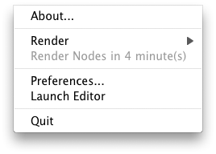
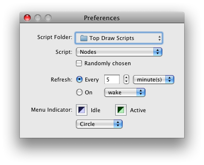

The application runs as a Status Item, which means that there is no front window or icon in the dock. Instead, there will be a colored shape in the menu bar to indicate the current status (idle or rendering). If you click on the item, it will display a menu similar to this menu:

| Menu Item | Description |
|---|---|
| About... | Version and other details |
| Render | If you select just the menu item, it will render the currently active script (as shown below this item). Otherwise, you can choose another item from the popup menu list. |
| Render... | The name of the currently active script and the remaining time until it is rendered is listed. In this example, the Top Draw Script "Nodes" will be rendered and installed as your desktop in about 4 minutes. |
| Preferences... | Set the script, update interval, etc. as described below. |
| Launch Editor | If you've installed the Top Draw Editor, this menu item will be shown. When chosen, it will launch the editor with the currently active script. |
| Quit | Quit Top Draw. |

The most up-to-date versions can be found at Google's open source repository, as the Top Draw project.
The program is open source